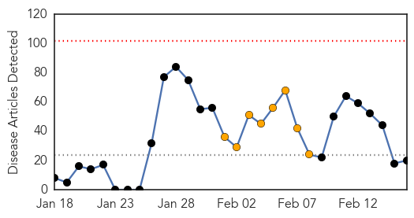

30 Day Trends
Web: 0 alerts, 8 warnings
Twitter: 1 alerts, 0 warnings
Top Articles:
- 0.986
- MERS toll in Kingdom hits 60Healthcare
- 0.976
- Prince Edward Island government confirms first case of pig virus
- 0.971
- Prince Edward Island government confirms first case of pig virus
- 0.954
- Winter Olympics pose heightened disease risk for British farms
- 0.917
- Chicago Tribune
- 0.917
- Chicago Tribune
- 0.917
- Chicago Tribune
- 0.917
- Chicago Tribune
- 0.910
- The world windows to Thailand
- 0.876
- A simple tummy bug to some but fatal to 500,000 impoverished children each year
- 0.866
- Suspected Islamists kill 90 in Nigeria village raid
- 0.866
- A cyclist rides past storm damage on the collapsed coastal road which runs through Amroth
- 0.866
- An adult white-tailed eagle is seen in a forest near the remote village of Sosnovy Bor
- 0.776
- Valley flu season winding down? Maybe
- 0.746
- Finland Joins US in Health Partnership to Fight against Infectious Disease Threats
- 0.682
- China reports new H7N9 cases, cities ban poultry trading
- 0.557
- UN envoy concerned about Fallujah deteriorating situationIraq
- 0.553
- Overworked staff at ‘24 hours in A&E’ hospital caught sleeping on the job
- 0.517
- Suspected swine fever kills 200 pigs
- 0.510
- Schoolchildren, staff stage protest for water
Top Tweets:
-
No tweets found for Feb 16, 2014
Web/News Articles
Tweets

Article Locations